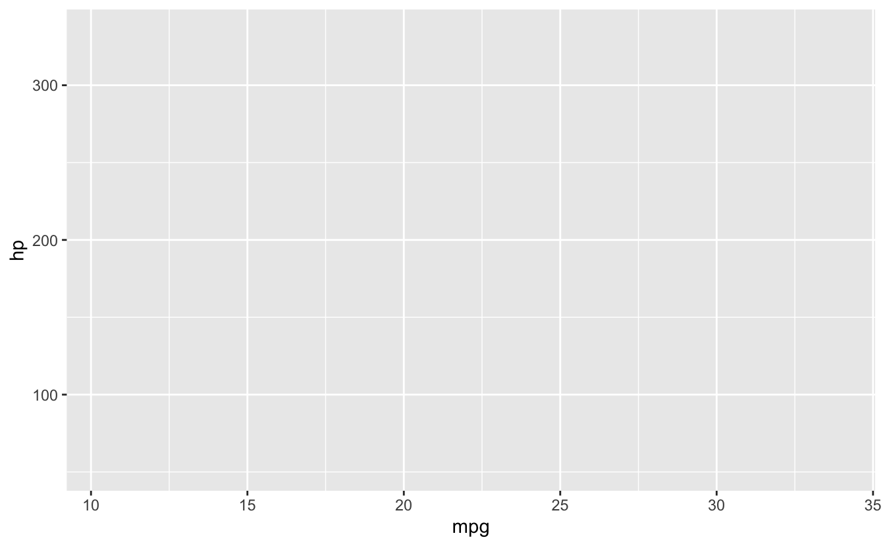
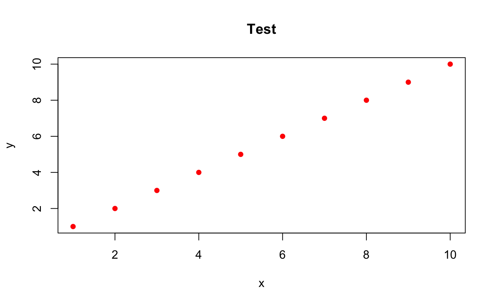
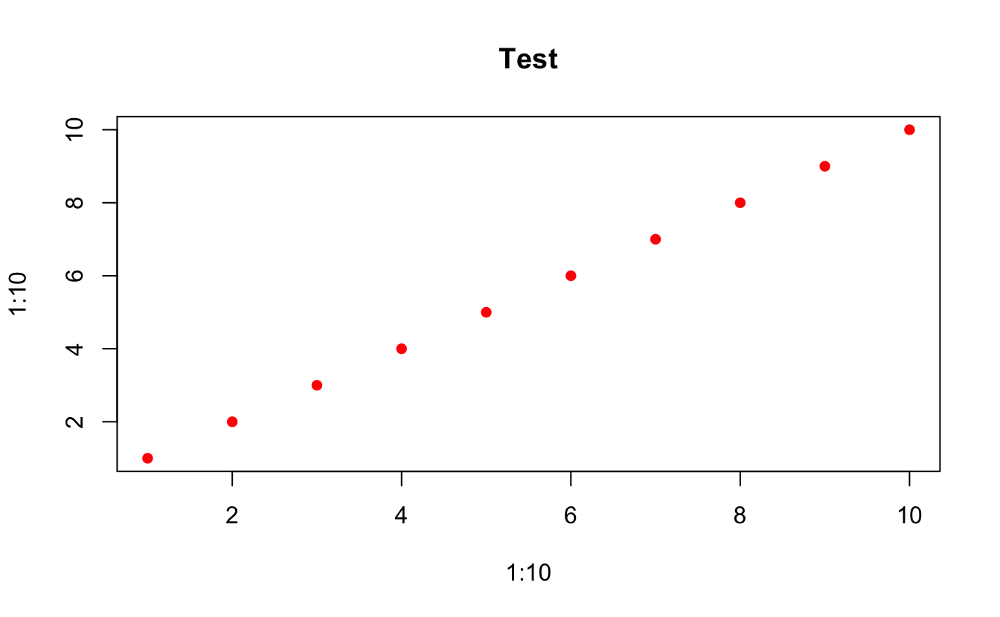

Chapter 16 Function Creation & Errors
What You’ll Learn:
- Creating functions in R
- Function arguments and defaults
- Return values
- Common function creation errors
- Function documentation
Key Errors Covered: 18+ function errors
Difficulty: ⭐⭐ Intermediate to ⭐⭐⭐ Advanced
16.1 Introduction
Functions are fundamental to R programming, but creating them has pitfalls:
# Try to create a function
my_function <- function(x) {
result <- x * 2
# Forget to return!
}
my_function(5) # Returns NULL!Let’s master function creation to avoid these issues.
16.2 Function Basics
💡 Key Insight: Functions Are Objects
# Functions are first-class objects
my_func <- function(x) {
x * 2
}
# It's an object
class(my_func)
#> [1] "function"
typeof(my_func)
#> [1] "closure"
# Can be passed around
apply_func <- function(f, value) {
f(value)
}
apply_func(my_func, 5)
#> [1] 10
# Can be stored in lists
func_list <- list(
double = function(x) x * 2,
triple = function(x) x * 3
)
func_list$double(5)
#> [1] 10
# Can be returned from functions
make_multiplier <- function(n) {
function(x) x * n
}
times_4 <- make_multiplier(4)
times_4(5)
#> [1] 20Key points: - Functions are objects like any other - Can be assigned to variables - Can be passed as arguments - Can be returned from functions - Can be anonymous (unnamed)
16.3 Error #1: could not find function
⭐ BEGINNER 🔍 SCOPE
16.3.1 The Error
# Typo in function name
maen(c(1, 2, 3))
#> Error in maen(c(1, 2, 3)): could not find function "maen"🔴 ERROR
Error in maen(c(1, 2, 3)) : could not find function "maen"16.3.2 What It Means
R can’t find a function with that name in the current environment or loaded packages.
16.3.3 Common Causes
16.3.4 Solutions
✅ SOLUTION 1: Check Spelling
# Use tab completion in RStudio
# Type first few letters and press Tab
# Check available functions
apropos("mean") # Find functions with "mean" in name
#> [1] ".colMeans" ".rowMeans" "colMeans" "cummean"
#> [5] "group_means" "kmeans" "mean" "mean_val"
#> [9] "mean.Date" "mean.default" "mean.difftime" "mean.POSIXct"
#> [13] "mean.POSIXlt" "robust_mean" "rowMeans" "weighted.mean"
# Search help
??mean✅ SOLUTION 2: Load Required Package
# Check if function is in a package
help.search("ggplot")
# Load package
library(ggplot2)
#> Warning: package 'ggplot2' was built under R version 4.5.1
# Or use package::function syntax
ggplot2::ggplot(mtcars, aes(x = mpg, y = hp))
✅ SOLUTION 3: Check Function Exists
16.4 Error #2: argument "x" is missing, with no default
⭐ BEGINNER 📋 ARGS
16.4.1 The Error
my_func <- function(x, y) {
x + y
}
my_func(5) # Missing y!
#> Error in my_func(5): argument "y" is missing, with no default🔴 ERROR
Error in my_func(5) : argument "y" is missing, with no default16.4.3 Understanding Arguments
# Required arguments (no default)
func1 <- function(x, y) {
x + y
}
func1(5, 10) # Must provide both
#> [1] 15# Optional arguments (with default)
func2 <- function(x, y = 10) {
x + y
}
func2(5, 20) # Can override default
#> [1] 25
func2(5) # Uses default y = 10
#> [1] 15
# All optional
func3 <- function(x = 5, y = 10) {
x + y
}
func3() # Uses all defaults
#> [1] 15
func3(8) # Override x, use default y
#> [1] 18
func3(8, 12) # Override both
#> [1] 2016.4.4 Solutions
✅ SOLUTION 1: Provide All Required Arguments
✅ SOLUTION 2: Add Default Values
# Make some/all arguments optional
my_func <- function(x, y = 0) {
x + y
}
my_func(5) # Works, y defaults to 0
#> [1] 5
my_func(5, 10) # Can still override
#> [1] 15
# Can use NULL as default
my_func2 <- function(x, y = NULL) {
if (is.null(y)) {
y <- x # Default to same as x
}
x + y
}
my_func2(5)
#> [1] 10
my_func2(5, 3)
#> [1] 8✅ SOLUTION 3: Check Arguments
my_func <- function(x, y) {
# Check if arguments provided
if (missing(x)) {
stop("Argument 'x' is required")
}
if (missing(y)) {
message("Argument 'y' not provided, using default of 0")
y <- 0
}
x + y
}
my_func(5) # Warning but works
#> Argument 'y' not provided, using default of 0
#> [1] 5
my_func(5, 3)
#> [1] 816.5 Error #3: unused argument
⭐ BEGINNER 📋 ARGS
16.5.1 The Error
my_func <- function(x, y) {
x + y
}
my_func(5, 10, 15) # Too many arguments!
#> Error in my_func(5, 10, 15): unused argument (15)🔴 ERROR
Error in my_func(5, 10, 15) : unused argument (15)16.5.4 Solutions
✅ SOLUTION 1: Remove Extra Arguments
✅ SOLUTION 2: Use … to Accept Extra Arguments
# Allow any number of additional arguments
my_func <- function(x, y, ...) {
result <- x + y
# Can pass ... to other functions
extra_args <- list(...)
if (length(extra_args) > 0) {
message("Ignoring extra arguments: ",
paste(names(extra_args), collapse = ", "))
}
result
}
my_func(5, 10) # Works
#> [1] 15
my_func(5, 10, z = 15) # Works, ignores z
#> Ignoring extra arguments: z
#> [1] 15
my_func(5, 10, 15, 20) # Works, ignores unnamed extras
#> Ignoring extra arguments:
#> [1] 15✅ SOLUTION 3: Validate Arguments
my_func <- function(x, y) {
# Capture call
call <- match.call()
# Check for unexpected arguments
valid_args <- c("x", "y")
provided_args <- names(call)[-1] # Remove function name
invalid <- setdiff(provided_args, valid_args)
if (length(invalid) > 0) {
stop("Unexpected arguments: ", paste(invalid, collapse = ", "),
"\nValid arguments are: ", paste(valid_args, collapse = ", "))
}
x + y
}
my_func(5, 10)
#> [1] 1516.6 Return Values
💡 Key Insight: Return Values
# Implicit return (last expression)
func1 <- function(x) {
x * 2
}
func1(5) # Returns 10
#> [1] 10
# Explicit return
func2 <- function(x) {
return(x * 2)
}
func2(5) # Returns 10
#> [1] 10
# Early return
func3 <- function(x) {
if (x < 0) {
return(0) # Exit early
}
x * 2
}
func3(-5) # Returns 0
#> [1] 0
func3(5) # Returns 10
#> [1] 10
# No return (returns NULL)
func4 <- function(x) {
result <- x * 2
# Forgot to return or print result
}
func4(5) # Returns NULL invisibly
# Multiple values (use list)
func5 <- function(x) {
list(
original = x,
doubled = x * 2,
squared = x^2
)
}
func5(5)
#> $original
#> [1] 5
#>
#> $doubled
#> [1] 10
#>
#> $squared
#> [1] 25
# Return NULL explicitly
func6 <- function(x) {
if (x < 0) {
return(NULL)
}
x * 2
}
func6(-5) # NULL
#> NULL
func6(5) # 10
#> [1] 10Best practices:
- Last expression is returned automatically
- Use return() for early exits
- Use invisible() for functions with side effects
- Return lists for multiple values
16.7 Error #4: object of type 'closure' is not subsettable
⭐⭐ INTERMEDIATE 🔢 TYPE
16.7.1 The Error
my_func <- function(x) x * 2
# Try to subset a function
my_func[1]
#> Error in my_func[1]: object of type 'closure' is not subsettable🔴 ERROR
Error in my_func[1] : object of type 'closure' is not subsettable16.7.2 What It Means
You’re trying to subset a function as if it were a vector or list. “Closure” is R’s internal name for functions.
16.7.4 Solutions
✅ SOLUTION 1: Check Object Type
✅ SOLUTION 2: Call Function Properly
✅ SOLUTION 3: Avoid Name Collisions
# Don't overwrite common function names
# Bad
# mean <- my_data
# Good
my_mean_value <- mean(my_data)
#> Error: object 'my_data' not found
# If you accidentally overwrote
mean <- function(x) sum(x) / length(x)
# Restore
rm(mean) # Remove your version
mean(c(1, 2, 3)) # Uses base::mean again
#> [1] 216.8 Function Arguments: … (Dots)
💡 Key Insight: The … Argument
# ... captures any additional arguments
my_plot <- function(x, y, ...) {
plot(x, y, ...) # Pass ... to another function
}
# Can pass any plot arguments
my_plot(1:10, 1:10, col = "red", pch = 16, main = "Test")
# Access ... contents
my_func <- function(...) {
args <- list(...)
cat("Received", length(args), "arguments\n")
args
}
my_func(a = 1, b = 2, c = 3)
#> Received 3 arguments
#> $a
#> [1] 1
#>
#> $b
#> [1] 2
#>
#> $c
#> [1] 3
# Extract specific arguments from ...
my_func2 <- function(x, ...) {
dots <- list(...)
# Get specific argument
if ("multiplier" %in% names(dots)) {
mult <- dots$multiplier
} else {
mult <- 1
}
x * mult
}
my_func2(5)
#> [1] 5
my_func2(5, multiplier = 3)
#> [1] 15
# Common use: wrapper functions
my_mean <- function(..., na.rm = FALSE) {
# Add custom behavior
message("Calculating mean...")
# Pass to base function
mean(..., na.rm = na.rm)
}
my_mean(c(1, 2, NA, 4), na.rm = TRUE)
#> Calculating mean...
#> [1] 2.333333
When to use …: - Wrapper functions (pass args to another function) - Flexible functions (accept varying arguments) - Methods (S3/S4 generics often use …)
Caution: - Arguments after … must be named explicitly - Easy to make typos that go unnoticed
16.9 Argument Matching
💡 Key Insight: How R Matches Arguments
my_func <- function(first, second, third) {
cat("first:", first, "\n")
cat("second:", second, "\n")
cat("third:", third, "\n")
}
# 1. Exact name match
my_func(first = 1, second = 2, third = 3)
#> first: 1
#> second: 2
#> third: 3
# 2. Partial name match (not recommended!)
my_func(f = 1, s = 2, t = 3)
#> Warning in my_func(f = 1, s = 2, t = 3): partial argument match of 'f' to
#> 'first'
#> Warning in my_func(f = 1, s = 2, t = 3): partial argument match of 's' to
#> 'second'
#> Warning in my_func(f = 1, s = 2, t = 3): partial argument match of 't' to
#> 'third'
#> first: 1
#> second: 2
#> third: 3
# 3. Positional match
my_func(1, 2, 3)
#> first: 1
#> second: 2
#> third: 3
# 4. Mixed (named don't need to be in order)
my_func(third = 3, first = 1, second = 2)
#> first: 1
#> second: 2
#> third: 3
my_func(1, third = 3, second = 2)
#> first: 1
#> second: 2
#> third: 3
# Order of matching:
# 1. Exact name matches
# 2. Partial name matches
# 3. Positional matchesBest practices: - Use exact names for clarity - Avoid partial matching (can cause confusion) - Use names for all arguments after the first few - Named arguments can be in any order
16.10 Common Function Patterns
🎯 Best Practice: Function Patterns
# 1. Validate inputs
safe_divide <- function(x, y) {
# Check types
if (!is.numeric(x) || !is.numeric(y)) {
stop("Both x and y must be numeric")
}
# Check values
if (any(y == 0)) {
stop("Cannot divide by zero")
}
x / y
}
safe_divide(10, 2)
#> [1] 5# 2. Provide informative messages
verbose_mean <- function(x, na.rm = FALSE, verbose = TRUE) {
if (verbose) {
message("Calculating mean of ", length(x), " values")
if (na.rm) {
message("Removing NA values")
}
}
mean(x, na.rm = na.rm)
}
verbose_mean(c(1, 2, NA, 4), na.rm = TRUE)
#> Calculating mean of 4 values
#> Removing NA values
#> [1] 2.333333
# 3. Handle edge cases
robust_max <- function(x) {
if (length(x) == 0) {
return(NULL)
}
if (all(is.na(x))) {
return(NA)
}
max(x, na.rm = TRUE)
}
robust_max(numeric(0))
#> NULL
robust_max(c(NA, NA))
#> [1] NA
robust_max(c(1, 2, NA, 3))
#> [1] 3
# 4. Return useful objects
detailed_summary <- function(x) {
result <- list(
mean = mean(x, na.rm = TRUE),
median = median(x, na.rm = TRUE),
sd = sd(x, na.rm = TRUE),
n = length(x),
n_missing = sum(is.na(x))
)
class(result) <- "detailed_summary"
result
}
summary_obj <- detailed_summary(c(1, 2, NA, 4, 5))
summary_obj
#> $mean
#> [1] 3
#>
#> $median
#> [1] 3
#>
#> $sd
#> [1] 1.825742
#>
#> $n
#> [1] 5
#>
#> $n_missing
#> [1] 1
#>
#> attr(,"class")
#> [1] "detailed_summary"
# 5. Use ... appropriately
flexible_plot <- function(x, y, type = "p", ...) {
# Set defaults
defaults <- list(
pch = 16,
col = "blue"
)
# Override with ...
args <- modifyList(defaults, list(...))
# Call plot
do.call(plot, c(list(x = x, y = y, type = type), args))
}
flexible_plot(1:10, 1:10, col = "red", main = "Test")
16.11 Documentation
🎯 Best Practice: Document Your Functions
#' Calculate the area of a circle
#'
#' @param radius Numeric. The radius of the circle.
#' @param units Character. The units of measurement (default: "cm").
#' @return Numeric. The area of the circle.
#' @examples
#' circle_area(5)
#' circle_area(10, units = "inches")
#' @export
circle_area <- function(radius, units = "cm") {
if (!is.numeric(radius) || radius < 0) {
stop("radius must be a non-negative number")
}
area <- pi * radius^2
structure(
area,
units = units,
class = c("circle_area", "numeric")
)
}
# In-function comments
calculate_price <- function(base_price, tax_rate = 0.1, discount = 0) {
# Validate inputs
if (base_price < 0) stop("base_price cannot be negative")
if (tax_rate < 0 || tax_rate > 1) stop("tax_rate must be between 0 and 1")
if (discount < 0 || discount > 1) stop("discount must be between 0 and 1")
# Apply discount
discounted_price <- base_price * (1 - discount)
# Add tax
final_price <- discounted_price * (1 + tax_rate)
# Return itemized result
list(
base_price = base_price,
discount = discount,
discounted_price = discounted_price,
tax = discounted_price * tax_rate,
final_price = final_price
)
}16.12 Summary
Key Takeaways:
- Functions are objects - Can be assigned, passed, returned
- could not find function - Check spelling, loading, scope
- Provide required arguments - Or add defaults
- Don’t pass extra arguments - Unless function uses …
- Last expression is returned - Or use return() explicitly
- closure not subsettable - You’re trying to subset a function
- Use … for flexibility - Pass extra args to other functions
- Validate inputs - Check types and values
Quick Reference:
| Error | Cause | Fix |
|---|---|---|
| could not find function | Typo, not loaded, not defined | Check spelling, load package |
| argument missing | Required arg not provided | Provide arg or add default |
| unused argument | Too many args | Remove extra or use … |
| closure not subsettable | Subsetting a function | Call function or use right object |
Function Creation:
# Basic function
my_func <- function(x, y) {
x + y
}
# With defaults
my_func <- function(x, y = 0) {
x + y
}
# With ...
my_func <- function(x, ...) {
# Do something
other_func(x, ...)
}
# With validation
my_func <- function(x) {
if (!is.numeric(x)) stop("x must be numeric")
x * 2
}
# Return values
my_func <- function(x) {
list(result = x * 2, original = x)
}Best Practices:
# ✅ Good
function(x, y = 0) # Sensible defaults
if (!is.numeric(x)) stop() # Validate inputs
return(list(a = 1, b = 2)) # Multiple values in list
Use descriptive names # clear_cache() not cc()
# ❌ Avoid
function(x) # No defaults when optional
No input validation # Causes cryptic errors later
mean <- my_data # Overwriting function names
function(x, y, z, a, b, c) # Too many arguments16.13 Exercises
📝 Exercise 1: Safe Division Function
Write safe_divide(x, y) that:
1. Checks both are numeric
2. Handles division by zero
3. Works with vectors
4. Returns informative errors
📝 Exercise 2: Flexible Summary
Write my_summary(x, ...) that:
1. Calculates mean, median, sd
2. Accepts … for additional stats
3. Handles NA values
4. Returns named list
📝 Exercise 3: Argument Validator
Write validate_args(func, ...) that:
1. Checks if function exists
2. Validates argument types
3. Checks required args provided
4. Returns TRUE/FALSE with messages
16.14 Exercise Answers
Click to see answers
Exercise 1:
safe_divide <- function(x, y) {
# Check types
if (!is.numeric(x)) {
stop("x must be numeric, got ", class(x)[1])
}
if (!is.numeric(y)) {
stop("y must be numeric, got ", class(y)[1])
}
# Check for zero
if (any(y == 0)) {
warning("Division by zero detected, returning Inf/-Inf")
# R handles this naturally, but we warn
}
# Check lengths match or can recycle
if (length(x) != length(y) && length(x) != 1 && length(y) != 1) {
if (max(length(x), length(y)) %% min(length(x), length(y)) != 0) {
warning("Lengths not compatible for recycling: ",
length(x), " and ", length(y))
}
}
result <- x / y
result
}
# Test
safe_divide(10, 2)
#> [1] 5
safe_divide(c(10, 20, 30), c(2, 4, 5))
#> [1] 5 5 6
safe_divide(10, 0) # Warning
#> Warning in safe_divide(10, 0): Division by zero detected, returning Inf/-Inf
#> [1] InfExercise 2:
my_summary <- function(x, ..., na.rm = TRUE) {
# Base statistics
result <- list(
n = length(x),
n_missing = sum(is.na(x)),
mean = mean(x, na.rm = na.rm),
median = median(x, na.rm = na.rm),
sd = sd(x, na.rm = na.rm),
min = min(x, na.rm = na.rm),
max = max(x, na.rm = na.rm)
)
# Additional statistics from ...
extra_stats <- list(...)
for (stat_name in names(extra_stats)) {
stat_func <- extra_stats[[stat_name]]
if (is.function(stat_func)) {
result[[stat_name]] <- stat_func(x, na.rm = na.rm)
}
}
class(result) <- "my_summary"
result
}
# Print method
print.my_summary <- function(x, ...) {
cat("Summary Statistics\n")
cat("==================\n")
for (name in names(x)) {
cat(sprintf("%-12s: %s\n", name,
format(x[[name]], digits = 3)))
}
invisible(x)
}
# Test
data <- c(1, 2, NA, 4, 5, 6, 7, 8, 9, 10)
my_summary(data)
#> Summary Statistics
#> ==================
#> n : 10
#> n_missing : 1
#> mean : 5.78
#> median : 6
#> sd : 3.07
#> min : 1
#> max : 10
# With extra stats
my_summary(data,
IQR = IQR,
mad = mad)
#> Summary Statistics
#> ==================
#> n : 10
#> n_missing : 1
#> mean : 5.78
#> median : 6
#> sd : 3.07
#> min : 1
#> max : 10
#> IQR : 4
#> mad : 2.97Exercise 3:
validate_args <- function(func_name, ...) {
# Check function exists
if (!exists(func_name, mode = "function")) {
message("✗ Function '", func_name, "' not found")
return(FALSE)
}
func <- get(func_name, mode = "function")
func_args <- formals(func)
# Get provided arguments
provided <- list(...)
# Check required arguments (those without defaults)
required_args <- names(func_args)[sapply(func_args,
function(x) class(x) == "name")]
missing_required <- setdiff(required_args, names(provided))
if (length(missing_required) > 0) {
message("✗ Missing required arguments: ",
paste(missing_required, collapse = ", "))
return(FALSE)
}
# Check for unexpected arguments
if (!"..." %in% names(func_args)) {
unexpected <- setdiff(names(provided), names(func_args))
if (length(unexpected) > 0) {
message("✗ Unexpected arguments: ",
paste(unexpected, collapse = ", "))
return(FALSE)
}
}
# Check argument types (basic)
for (arg_name in names(provided)) {
arg_value <- provided[[arg_name]]
# Could add more sophisticated type checking here
}
message("✓ All validations passed for '", func_name, "'")
return(TRUE)
}
# Test
validate_args("mean", x = c(1, 2, 3), na.rm = TRUE)
#> ✗ Missing required arguments: ...
#> [1] FALSE
validate_args("mean", na.rm = TRUE) # Missing x
#> ✗ Missing required arguments: x, ...
#> [1] FALSE
validate_args("mean", x = c(1, 2, 3), invalid = TRUE) # Extra arg
#> ✗ Missing required arguments: ...
#> [1] FALSEExercise 4:
make_adder <- function(n) {
# Return a function that adds n
function(x) {
x + n
}
}
# Test
add_5 <- make_adder(5)
add_5(10)
#> [1] 15
add_100 <- make_adder(100)
add_100(50)
#> [1] 150
# Multiple uses
add_5(1:10)
#> [1] 6 7 8 9 10 11 12 13 14 15
# Each function retains its own n
add_5(5)
#> [1] 10
add_100(5)
#> [1] 105
# More advanced: with validation
make_adder_safe <- function(n) {
if (!is.numeric(n) || length(n) != 1) {
stop("n must be a single numeric value")
}
function(x) {
if (!is.numeric(x)) {
stop("x must be numeric")
}
x + n
}
}
add_3 <- make_adder_safe(3)
add_3(10)
#> [1] 13